|
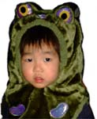 かんたに続け！カエル道を爆進せよ！【日本発たけぼう同志同志記者】今年もカエル道を爆進しています (/・ω・) 我が家の息子も2歳半になり、言葉もだいぶ達者になってまいりました。最近は「かんたは本物のカエル〜」と叫ぶようになり、着実にカエル道を歩んでることを実感させてくれてます。最新の画像を添付しまーす。
【全国かえる奉賛会】たけぼう！素晴らしいぞおお。息子は、かえるの生まれ替わりに違いないいいいい。大王が退位するときは、かえる転生により、びきたん大王８世になるであろうぞ。そのときまで、じっと母のお手製のかえる王冠をかぶりつづけるのだああああ。１５歳くらいが反抗期の山場であるが、かえる帽さえかぶっていれば、安心であるうう。
横浜の名物カエル葉巻きが奪いさられる！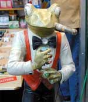 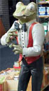 【横浜発石居カエル博士同志記者】横浜の中華街のタバコ屋さんの入り口に立っている僕の大好きなカエルが長年口にくわえていた葉巻をなんともぎ取られてしまっていました。昨年まではずっと大丈夫だったのですが。なんとも悲しいことです。写真添付します。最初のが昨年の写真、後のが今年1月の写真です。やっぱり世の中悪くなってきてるのかな。そう思いたくないんですけど。
【全国かえる奉賛会】おおお！反喫煙派の仕業であろうかあああ。かえるがたばこ吸っている画期的作品なので、だれか禁煙パイポにしてもいいから、かえしてくれええええ。葉巻きないと、かなしいでしょおおお。復活したら、外で『喫煙場所』のシンボルにして、喫煙派に守ってもらいましょおおお。
誕生日にはカエルケーキ！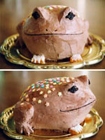 【福岡発おけいこ同志記者】記念カエルケーキを作りました。スポンジでおおまかな台を作って、チョコレートクリームでコーティング。目はレーズン。前足はオレンジピール。背中には砂糖の花を乗せてみました。届いたカエル箱とカエルケーキをテーブルに囲み、家族３人でお茶を‥‥飲んだだけでケーキはそのときはカワイソウで食べられませんでした。 でも、後日「もう食べないとヤバイだろう」という時期になり私と家のワンコ４匹のお腹にアッという間に収まってしまいました。
【全国かえる奉賛会】おおおー祝祭の日には、カエルケーキを作って、家族で祝う、というのが、日本の伝統になりつつありますねえ。この風習を職場や社会でも浸透させましょう。ケーキ職人のみなさああああん、これからクリスマスに向けて、かえるケーキを創造しておきましょう。
カエルスキーウエアからカエル水着まで！全天候型カエルグッズ販売！【カナダ発RANA同志記者】 こちらの会社では、なんとカエルスキーウエアとカエル水着、Tシャツ、小物等を販売しておられます。もしかしたらゴルフウェアもあるかもしれません。投稿された子供用水着とまったくおそろいの柄の大人用水着もあるようです。2年前からカナダのバンクーバーに来ております。こちらもカエルの宝庫です。特にバンクーバー水族館は、立派な「カエル展示室」が存在します。色々なカエルが展示され、子供向けにゲーム要素を加えたパネル類など、親しみやすい展示内容になってます。カエルに囲まれて、幸せなひと時を過ごすことができます。 こちらの水族館マップをごらんいただくとおわかりになると思いますが。 右上の奥がカエルマークになってます。ここがカエル展示室です。この広さと、カエルマークをみていただければ、この水族館でここは目玉の一つになっていることがお分かりいただけると思います。 また、カエルは北米のネイティブアートのモチーフの一つになってます。バンクーバー近郊に来られることがあったら、ぜひトーテムポールを細かく観察してみてください。かなりの確率で、カエルも彫りこまれています。 昨年のハロウィンでは、私はカエルの着ぐるみを着て、別の仮装をした友人、旦那と3人で、ダウンタウンを歩きました。カフェでお茶もしました。道路に面したウィンドウ沿いのカウンター席に座っていたので、道路を歩く沢山の方に手を振っていただきました。 RANA様直筆署名
kerokerokero
@-@
( v )
【全国かえる奉賛会】はるばるカナダからメールが届くなんてえええ、飛脚の時代に感激するぜえええええええ。今年のハロウインまでには、ぜひともデジカメ撮影とメール送信の方法を覚えてくっれえええええ。投稿も待つ！
福岡かえる展５！長野県かえる展と共通掲示板を設置！ 【福岡かえる展５実行委員会】６月６日カエルの日を祝福するイベント『福岡かえる展』は、今年も５年連続で挑戦することになったのだが、今年は、長野県のかえる展がほとんど同時期に開催することが決定。東西でいっしょに協力して、今年のイベントを行うことにりました。専用のスタッフ掲示板もできました。
【福岡かえる展５実行委員会】６月６日カエルの日を祝福するイベント『福岡かえる展』は、今年も５年連続で挑戦することになったのだが、今年は、長野県のかえる展がほとんど同時期に開催することが決定。東西でいっしょに協力して、今年のイベントを行うことにりました。専用のスタッフ掲示板もできました。みんなもカエル展情報に注意して、参加しましょおお。とくにイラストレーターの人は、いろいろと募集ものもあるので、注意しといてくれえええええ。
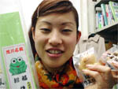 旭川ガマ記念館がま饅頭がパワーアップ！【旭川発がま親分同志記者】がま記念館名物として作った『がま饅頭』が評判なので、こんど包装も一新しました。買いやすい５個いりも作ったから、みんな買ってみてくれえええええ
【全国かえる奉賛会】旭川といえば、日本三大カエル名所のひとつ、喫茶店『がま記念館』があるところである。がま饅頭は、『かえる展』でも販売したことあるけど、とっても美味しいんで、評判だったのであるう。
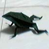 折り紙カエルに感激！【日本発ようくん同志記者】折り紙で作ったかえるです。考えた人はえらい！と思いませんか？リアル系が好きな私は一目惚れです。後ろ足とか、顔の感じとか。ちょうどいいサイズで折って、ちょこんとおいとくとぎょっとする人が多くて、よしよしとかうなずいてます。o(^-^)o
【全国かえる奉賛会】折り紙は江戸時代に発展した伝統的な遊びですよねえ。かえるが折れるなんてしらなかったよ。
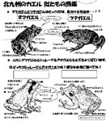 北九州に、かえる博物館！【北九州発カエルのガーデナー同志記者】大王様のふるさと北九州市に、昨年１１月オープンした”いのちのたび博物館”へ、行って来ました。その中の”ぽけっとミュージアム”というところに、カエルの展示コーナーがありました。生（なま）のカエルも、もちろんいます。
”探求館歴史ゾーン”には、懐かしのカエル看板もありました。おみやげ売り場にも、ちょびっとカエルグッズがありました。カエラーのみなさん、是非、足を運んで下さい。
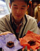 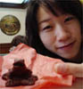 バレンタイン本命カエルチョコ多数ゲット！【福岡発げこげこ大王７世同志記者】今年も多数の本命チョコをありがとうございましたああああ。今年の一番人気は、なんといってもカエルチョコ。カジカカエルとヒキガエルの素晴らしいチョコです。
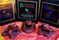 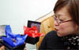 最近、大王は、オオヒキガエルをはじめ、ひきがえる系の美しさにうっとりしているんですが、チョコのヒキガエルは、口をあけていいんですよええええ。送ってくれたみんな。ありがとうねえええええ。
|
メールマガジン解除


かえる古新聞過去に取り上げた記事を見出し付きで一覧したい人は、ここをクリック◆創刊号を見る◆先週号を見る◆話題の号を見る◆かえる新聞の昔を読む
|
私も入っています。。全国かえる奉賛会
大王様に会うには、このバナーをクリック。ずっと奥に写真館があるぞ。全国かえる奉賛会に入会するには、自分のホームページのどこかに、下の部分を追加するとバナーがリンク付きで表示されるぞ。どんどん入会しましょー |


|